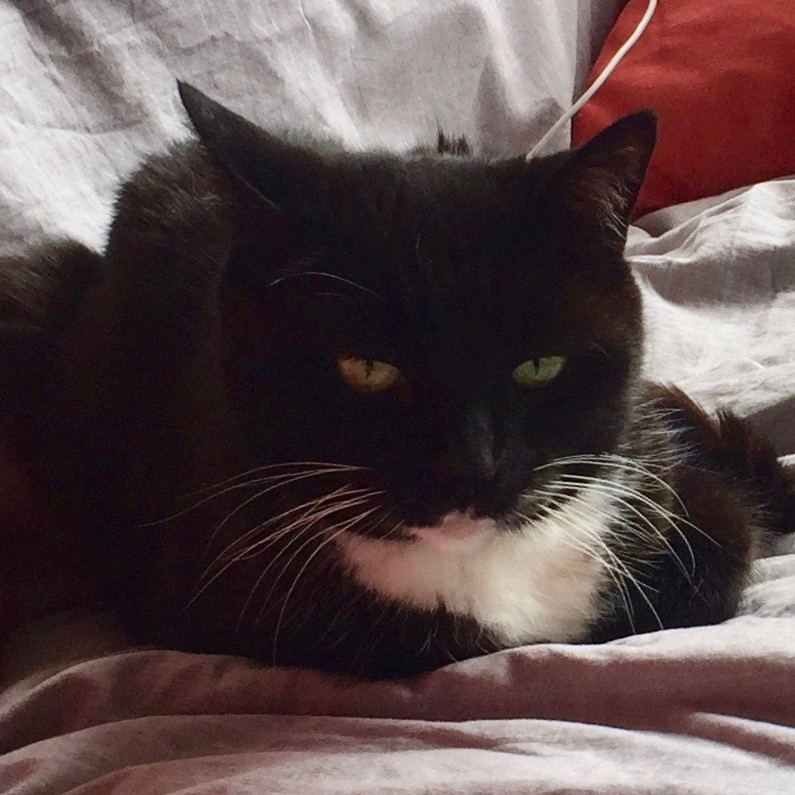

JOB DESCRIPTION
POSITION TITLE
Customer Service Representative
LOCATION
Denver, CO
EMPLOYMENT TYPE
Full-time
EXPERIENCE
Mid-Level
STATUS
Open
DESCRIPTION
The Customer Service Representative is responsible for interacting with and providing quality assistance to all radical customers, responsible for keeping up-to-date on the various product shizzle; helping the bidness reduce customer service wait times while doing a backhand spring and eating a ham sandwich.
HIRING LEAD
Paris Levey
APPROVED SALARY
$58,000